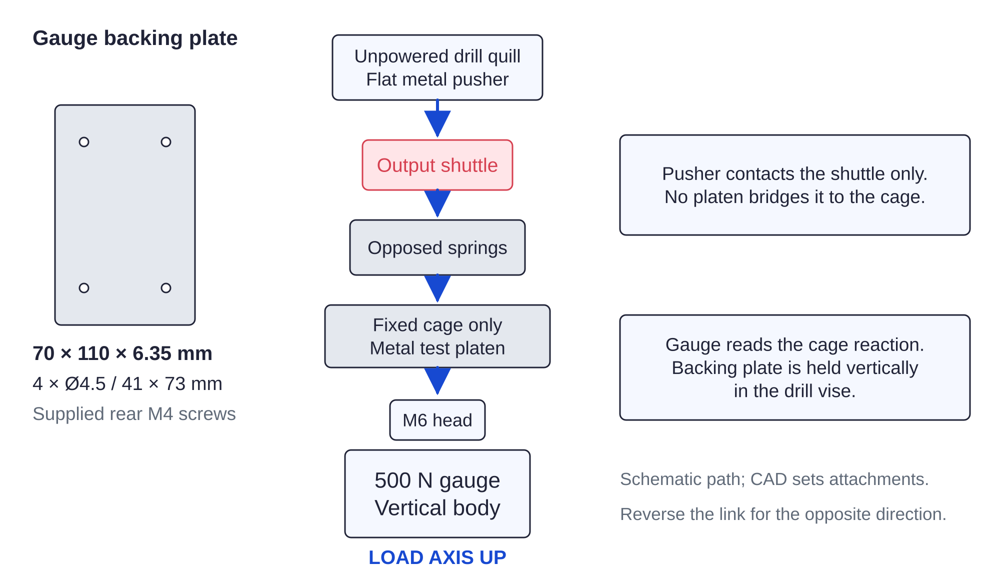

Screw drives / calibration fixture52 / 179
Mount the gauge vertically under the quill
The drill press supplies slow manual travel while its motor is unplugged. The force gauge is in series with the loose link, and the two platens contact different load-path members.
Add500 N push-pull gauge · 70 × 110 × 6.35 backing plate · supplied four M4 screws · metal test platens
Tools / setupPONY drill vise · drill motor unplugged · quill indicator · continuity meter

- Mount the gauge back to the plate using its 41 × 73 mm four-hole pattern and supplied M4 screws.
- Clamp the plate vertically in the drill vise. Fit the M6 compression head pointing up and a flat-ended pusher in the chuck; align both force axes.
Ready when
Gauge load axis is vertical, the backing plate is rigidly clamped and the pusher approaches its head squarely. A face-up gauge or angled head invalidates the fixture. Correct the vertical metal mounting before loading a spring or link.
Gauge specification ±1% of reading; use ±5–8 N total allowance for fixture/alignment unless a better independent uncertainty record is established.